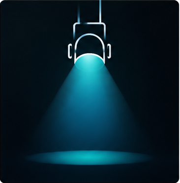
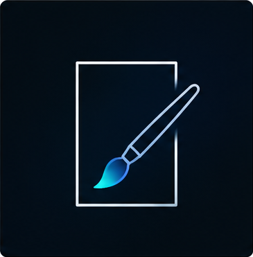
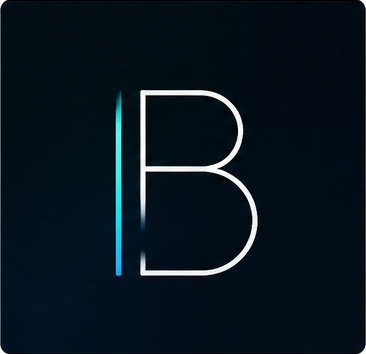
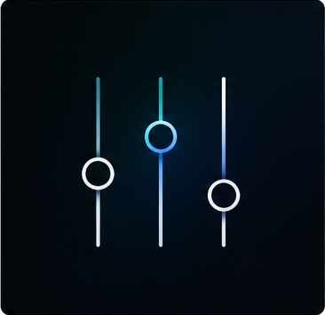

A focused setup, handled properly.
I can plan, supply, set up and operate lighting for gigs, small stages and creative events.
See lighting packages ↗ Enquire / Book
Enquire / Book
I make photographs, films, design and practical tools — then bring the same creative eye to live production.
Different formats. One practical creative process.
People, places, live moments and the details worth keeping.
02Ideas shaped for motion, from planning and shooting through to delivery.
03Turning footage into a clear story with rhythm, purpose and polish.
04Visual identities, posters and practical design for real things.
05Creative lighting designed, supplied, set up and operated by me.
06Useful systems and small tools built around how production actually works.
Creative designer and AV technician based in Auckland, New Zealand. I work primarily across the Hibiscus Coast and North Shore, but I'm happy to travel for the right projects.
I combine creative direction with technical precision — whether that's framing a photograph, operating live sound, designing lighting for a venue, or building tools that make production work smoother. I've lit gigs, managed AV for corporate events and galas, shot and edited video for brands, and designed everything from posters to web experiences.
I care about getting details right and making sure every part of a production — from planning through to execution — runs professionally and looks great.
Work with meExplore my creative services and live production work, with featured projects below.
Live music, events and moments worth keeping.

Lighting design, hire and live operation.

Promotional artwork for gigs, shows and events.
Ideas brought together through filming and editing.

Colour, type and a consistent visual identity.

System planning, show operation and practical tools.
I worked on the Rockstok Live website, and I continue to work with Rockstok as their sound and lighting technician.
I worked on this launchpad for practical AV tools, bringing timers, audio analysis and DMX calculations together in one place.
"Lighting looked fantastic and setup was completely handled for us. Everything was set up quickly and professionally, and it made a massive difference to the atmosphere."
"Just wanted to say a huge thank you for all your hard work at the United Against Cancer Gala. We really appreciate everything you did to make sure the sound and technical side of the evening ran smoothly. Your support and professionalism made a real difference."
"Thanks again for the theatre hire last weekend. Justin who I've known for a few years was top notch and nailed everything we needed."
Creative work and technical production overlap more than people think. I bring the same eye for detail to both.
I can plan, supply, set up and operate lighting for gigs, small stages and creative events.
See lighting packages ↗Planning, signal flow and production support shaped around the room and the job.
Ask about AV ↗Tools I’ve built for live production, lighting and AV workflows.
Photography, video, design, lighting or AV.